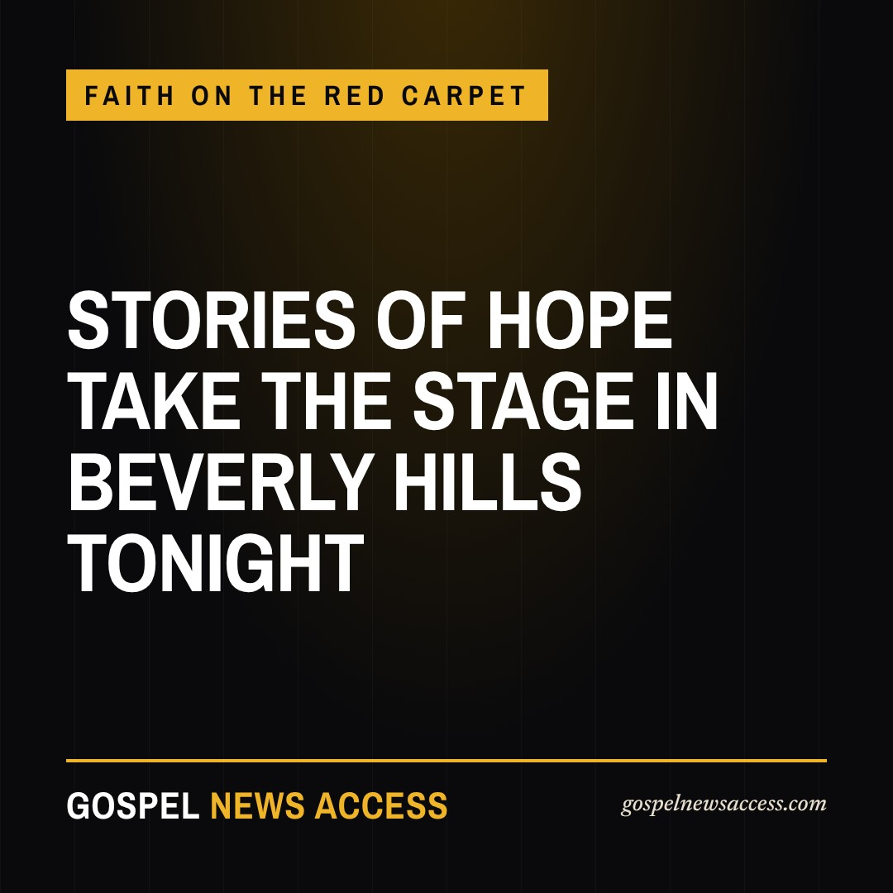

DeVon Franklin Leads a Night of Hope at the Global Film Awards in Beverly Hills
Faith, family and filmmakers from 30 nations share one red carpet tonight at the Writers Guild Theater, where a Zambian gospel artist walks alongside Hollywood's best-known faith producer. Which film of hope moved you most this year?
BEVERLY HILLS, California · November 5, 2026 at 3:55 PM Pacific · By the Gospel Desk, Gospel News Access

Hollywood has a red carpet for stories of hope tonight. The Authentic Global Film Festival presents the 2026 Global Film Awards at the Writers Guild Theater in Beverly Hills, and the festival says its mission is plain: films that promote peace, family and faith, from filmmakers who rarely get a big screen.
DeVon Franklin leads the arrivals. The producer, preacher and bestselling author built Franklin Entertainment on the belief that faith-filled stories can be mainstream hits, from "Miracles from Heaven" to "Breakthrough." He also sits on tonight's 6 PM panel with two-time Oscar winner Nick Vallelonga ("Green Book") and Grammy-nominated producer Theron "Neff-U" Feemster.
The carpet also carries a voice from the global church. Zambian gospel artist Ephriam Mutalangue is among the guests, alongside actress and singer Demetria McKinney. Actor Richard T. Jones of ABC's "The Rookie" hosts the evening.
More than 950 films from roughly 30 countries were submitted this year, according to the festival. Its founder, Dr. Gershom Sikaala, says the gap he set out to close is opportunity, not talent. "I founded this festival to close that gap," he said in the festival's announcement, "and to prove that stories of hope belong in Hollywood."
WHY IT MATTERS. Faith audiences have proved they will show up for films that reflect their values. A festival that rewards hope, family and faith on a Beverly Hills stage is one more sign the industry is paying attention, and it gives filmmakers from Africa, Asia and Latin America a door into the room.
TONIGHT AT A GLANCE. Red carpet 5 to 7 PM. Panel 6 PM. Awards 7 to 9 PM. Writers Guild Theater, 135 S. Doheny Drive, Beverly Hills. Official press room: newswirehollywood.com/agff-2026.html.
DISCLOSURE: Gospel News Access is part of the same media group as Newswire Hollywood, the festival's official media partner, and PR STARPOWER, which handles the festival's publicity. Details are from the festival's official run of show and press release.